Everything you need to write a horror script, break down every gag, and get it to set. Short chapters, lots of pictures, no padding.
IDEAS / SCRIPTS / FX BREAKDOWNS / REAL FILMSSPLATTERVHS.COM
00
What's in here
Skip to the bit you need
01Install itWindows, Linux, Chromebook
02The tourWhat every bit of the screen does
03Your first sceneThe Tab and Enter dance
04Bring your old scriptsCeltx, Final Draft, Fountain
05The beat guideSave the Cat, horror style
06Break down the goreTagging every effect
07ReportsContinuity, gag sheets, runtime
08Cards & reshufflingDrag scenes around
09NovelsThe book of the film
10Getting it outPDF, Final Draft, Fountain
11Your filesWhere everything lives
12Zen modeFocus timer for wandering brains
13When it breaksHelp, reports, AI note
☠Cheat sheetTear it out, tape it up
Short on time? Read chapters 03 and 06. That's the whole point of GORE DRAFT: write the scene, then tag the blood.
01
Install it
Two minutes, one scary warning
Windows
Download GoreDraft-Setup-0.2.0-beta.exe.
Double-click it. Windows will probably say "Windows protected your PC".
Click More info → Run anyway. The beta isn't code-signed yet, and that's the only reason Windows complains.
Choose Install for me only if you don't have admin rights. It works exactly the same.
Launch it from the Start Menu or the desktop shortcut.
Linux & Chromebook
Download GoreDraft-0.2.0-linux-x86_64.tar.gz and unpack it.
Run GoreDraft/GoreDraft.
Optional: run GoreDraft/install.sh to add it to your apps menu.
Chromebooks: turn on Linux first (Settings → Advanced → Developers → Linux development environment). It needs an Intel or AMD processor, not ARM.
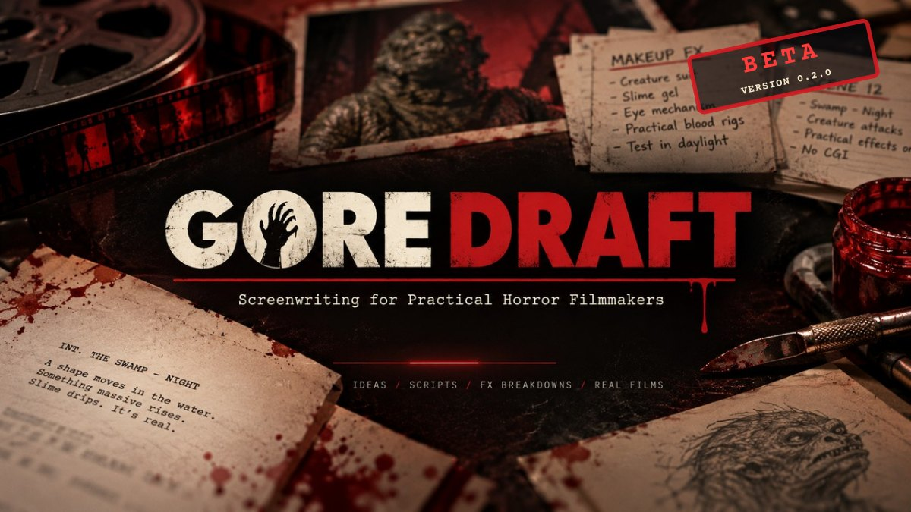
The BETA stamp means you're early. Thanks for that.
No account. No sign-in. No internet needed, ever. If the app asks you to log in to anything, it isn't GORE DRAFT.
02
The tour
Eight things on one screen
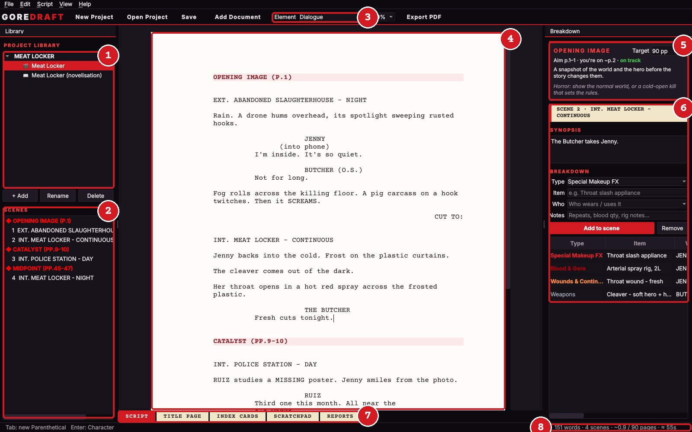
1
Project library. Every script and novel in this project. + Add makes a new one, and double-clicking renames it.
2
Scenes. Click to jump there. Drag to reorder. Red ◆ lines are beats.
3
Element. What the current line is: heading, action, dialogue and so on. Change it here or with Ctrl+1–8.
4
The page. A real screenplay page with real margins, so a page here is roughly a minute on screen.
5
Beat guide. Which Save the Cat beat you're in, and whether you're on time.
6
Breakdown. The effects, props and cast for the scene your cursor is in.
7
Tabs. Script, Title Page, Index Cards, Scratchpad and Reports.
8
Status bar. Words, scenes, pages and estimated runtime. Bottom-left tells you what Tab and Enter will do next.
Panels in the way? View menu → untick Library or Breakdown, or press F11 for Zen mode and lose everything but the page (chapter 12).
03
Your first scene
The Tab & Enter dance
You never touch formatting. Two keys do it all: Enter starts the next line, and Tab changes what kind of line it is.
Write a scene in 5 moves
Type int. meat locker - night. As soon as you type INT. it turns into a Scene Heading.
Enter gives you Action. Describe the horror.
Tab gives you a Character. Type their name.
Enter gives you Dialogue. Make them talk.
Enter gives you the next Character. Hit Enter again on the empty line to drop back to Action.
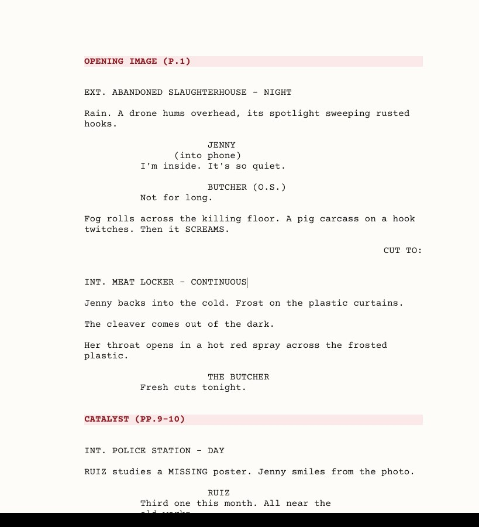
All of this was typed with Tab and Enter. No formatting by hand.
SCENE HEADINGEnter ↓
ACTIONTab ↓
CHARACTEREnter ↓
DIALOGUEEnter ↓
CHARACTEREnter = Action
The other moves
Parenthetical:Tab straight after typing a character name gives you ( ). Tab again jumps to the dialogue.
Transition: type CUT TO: on an action line and it slides to the right by itself.
Wrong element? On an empty line, keep pressing Tab to cycle through them, or press Ctrl+number. Bottom-left of the screen always says what Tab and Enter will do next.
04
Bring your old scripts
Rescue the drawer
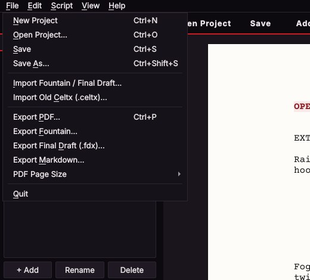
Everything comes in and goes out through the File menu.
GORE DRAFT was born because we had dozens of horror scripts stuck in old Celtx desktop files. Yours can come with you too.
Old Celtx (.celtx)
File → New Project, then File → Import Old Celtx.
Pick your .celtx file.
Every script, novel and scratchpad comes in with its original names and order. Cast from your old catalog is tagged on the scenes too.
Save. That's the moment your old work turns into plain files you own forever.
Final Draft & Fountain
File → Import Fountain / Final Draft takes .fdx, .fountain and plain-text Fountain files.
Celtx sketches, storyboards and calendars contain no text, so they're skipped. Your words, scenes and scratchpads all come through.
05
The beat guide
Save the Cat, with blood on it
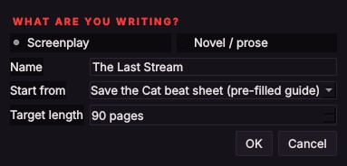
+ Add → Screenplay → Save the Cat beat sheet. Set your target length.
Start a script from the beat sheet, or use Script → Insert Save the Cat Beats on one you've already started. You get 15 red markers, each with its target page for your length, and an empty line ready under each.
The markers are a guide only. They never print, and they never end up in your PDF or Final Draft file.
Jump between beats
Ctrl+] for the next beat, Ctrl+[ for the previous one.
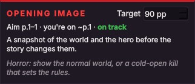
The beat guide follows your cursor.
Reading the guide
Aim: where this beat should land.
You're on: your actual page.
on track · early · running long
The grey italic line is the horror version of the beat: what it usually looks like in a horror film.
"Running long" is a nudge, not a rule. FX set pieces eat pages, and that's fine. Change your target length in the beat guide if you're making a 60-pager.
06
Break down the gore
The reason this app exists
Every scene gets a breakdown: every effect, prop, weapon and actor it needs. Put the cursor anywhere in a scene and the right-hand panel shows that scene.
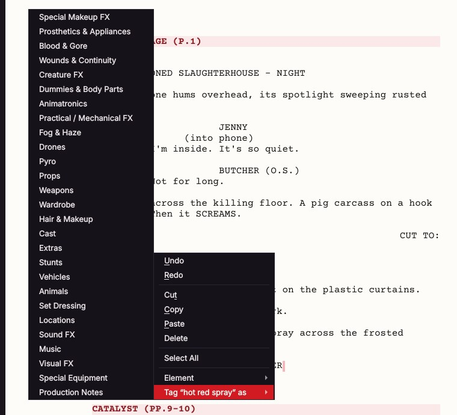
Select the words, right-click → Tag as, and pick the type. Done.
Fastest way: tag from the page
Select some words in the script, like hot red spray.
Right-click → Tag "…" as and choose a category.
Full way: the panel
Pick a Type.
Type the Item: Throat slash appliance.
Pick Who wears or uses it. This matters for the continuity report.
Add Notes: repeats, blood quantity, rig details.
Add to scene, or just press Enter.
Click any cell in the list to edit it. Remove deletes the selected row.
Effects come first
Special Makeup FXProsthetics & AppliancesBlood & GoreWounds & ContinuityCreature FXDummies & Body PartsAnimatronicsPractical / Mechanical FXFog & HazeDronesPyro
Below those come the usual production categories: props, weapons, wardrobe, hair & makeup, cast, extras, stunts, vehicles, animals, set dressing, locations, sound FX, music, visual FX, special equipment and production notes.
Always fill in Who for makeup. "Throat wound, JENNY, carry to sc 4" is what lets the continuity report track her wound across the whole film, so you know how many appliances to run before day one. The scene's synopsis box also shows on its index card.
07
Reports
Paperwork for the workshop
Open the Reports tab and pick one from the list. Every report can be exported as a PDF or HTML to print, email or pin to the workshop wall.
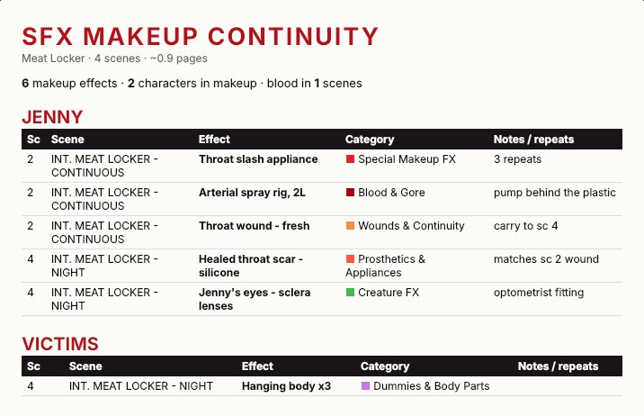
SFX Makeup Continuity. Every makeup effect, grouped by character, in scene order.
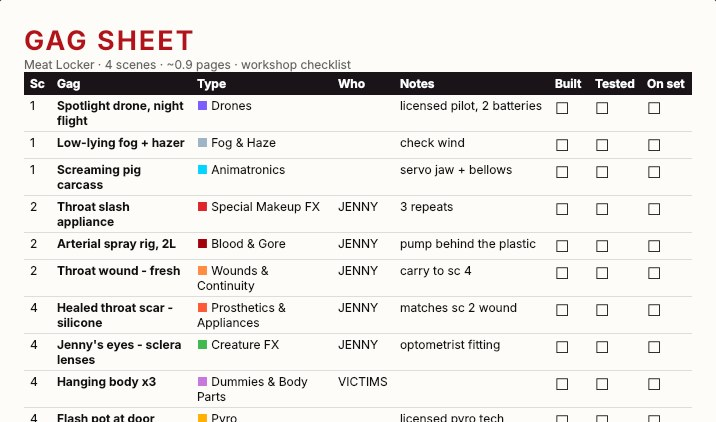
Gag Sheet. Every practical gag with Built, Tested and On set boxes. Print it and tick it off.
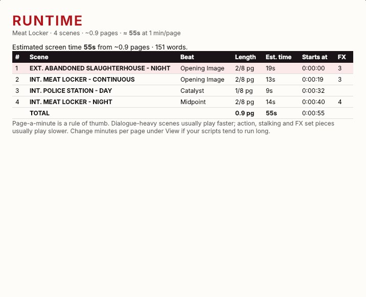
Runtime. Each scene's length, time and start timecode. Effects scripts play long? Set View → Minutes per Page to 1.2.
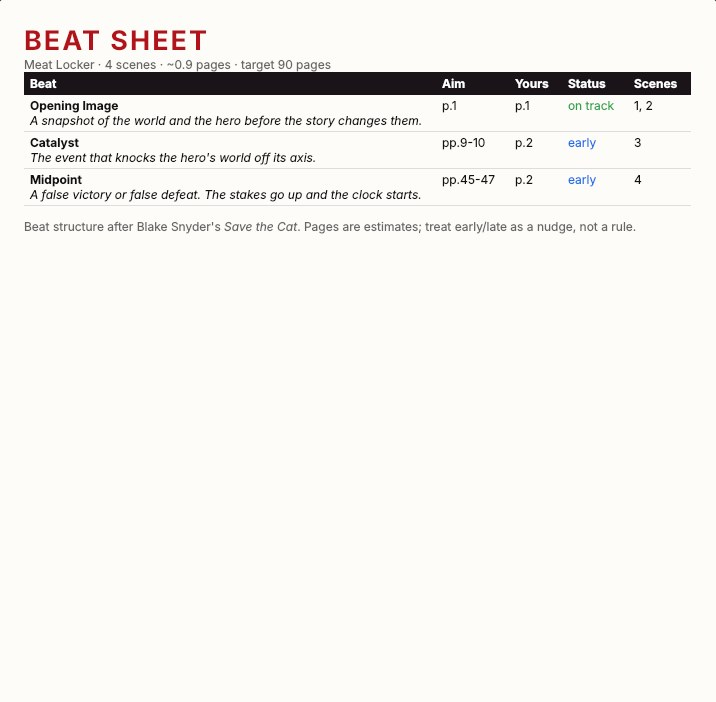
Beat Sheet. Your structure against your actual pages.
Report
Use it for
Scene Breakdown (with or without description)
The 1st AD's favourite: every scene with its cast and all tagged items.
Elements
Shopping lists: all props, all weapons, all wardrobe and so on, each with the scenes they're in.
Dialogue
Every line per character, for casting and table reads. Filter by character.
Cast & Scenes
Which scenes each actor is in, to plan shoot days.
08
Cards & reshuffling
Move the bodies around
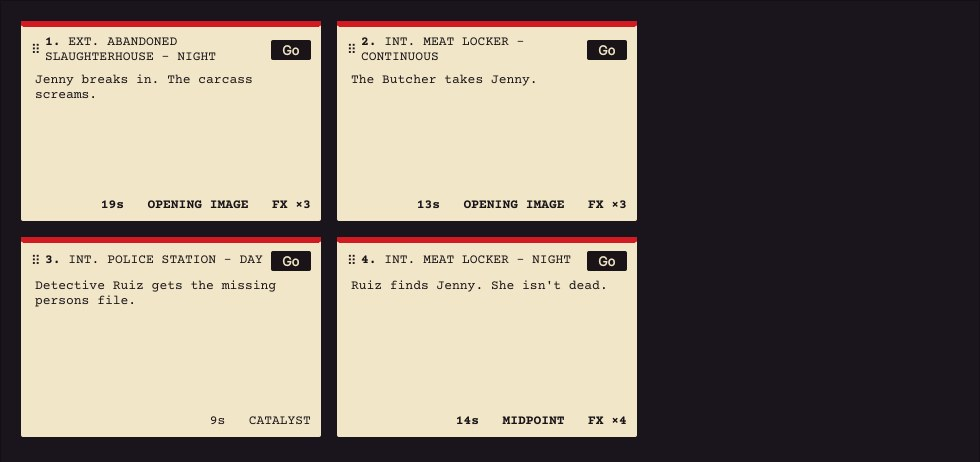
Each card shows the scene's synopsis, its length, its beat and how many FX it needs.
Reorder scenes: three ways
Index Cards: drag a card by its header (the ⠿ grip) onto another card. Drop it on the left half to go before, or the right half to go after.
Scenes list: drag a scene up or down.
Keyboard:Ctrl+Shift+↑ / ↓ moves the scene your cursor is in.
The scene's text, synopsis and whole breakdown move together. Changed your mind? Ctrl+Z.
Title page & scratchpad
Title Page holds your title, credit, author, draft, copyright and contact details. They print on the PDF's first page.
Scratchpad is a notepad for each script: gag ideas, locations, shopping lists. It's saved with the script, and it's the yellow-paper bit you remember from the old days.
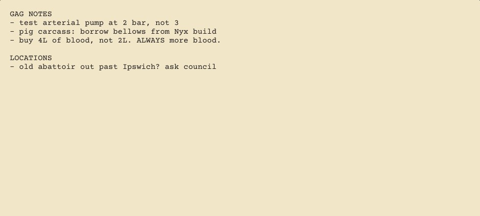
09
Novels
The book of the film (or the other way round)
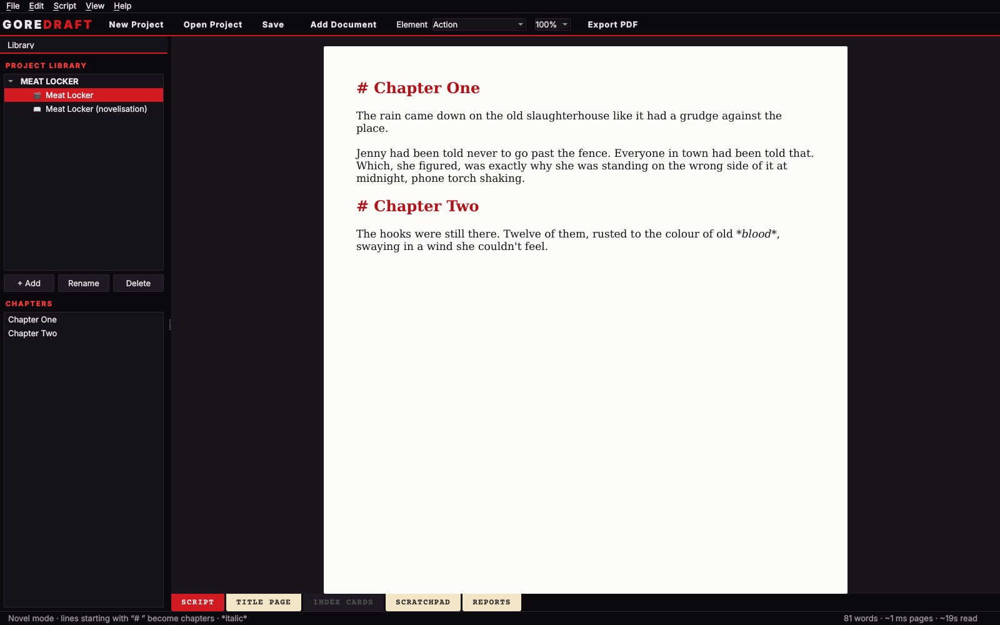
Script and novelisation in one project, side by side in the library.
+ Add → Novel / prose. It's a clean page with no screenplay rules.
Start a line with # to make a chapter. Chapters appear in the sidebar, and you click one to jump to it.
Wrap words in *stars* for italics.
The status bar shows words, manuscript pages and reading time.
Export PDF gives you a manuscript with a title page. Export Markdown gives you a file that opens in almost anything, including Word, Google Docs, Scrivener and Obsidian.
The Reports tab shows Manuscript Stats: words per chapter.
10
Getting it out
For producers, actors and other apps
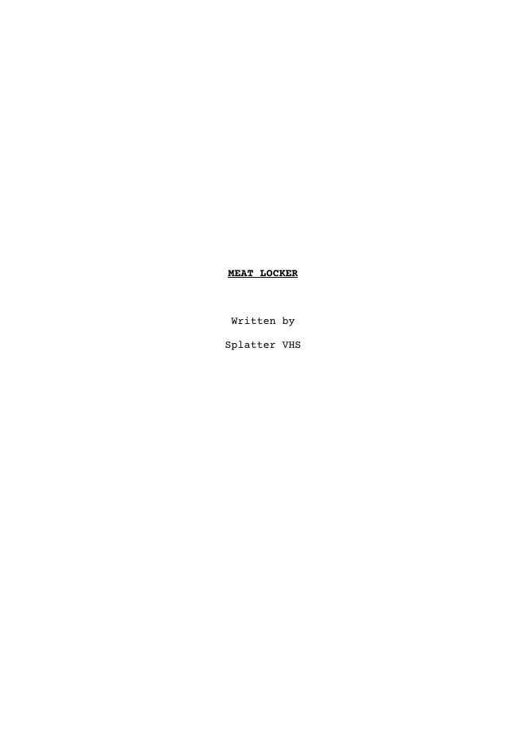
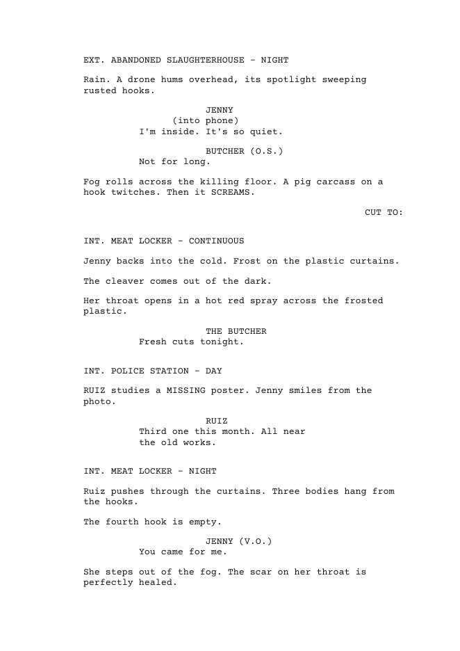
You want
Do this
A script to send people
File → Export PDF (Ctrl+P). Choose A4 or US Letter under File → PDF Page Size.
To open it in Final Draft
File → Export Final Draft (.fdx)
To open it in Highland, Beat, WriterSolo…
File → Export Fountain
Novel to Word or Google Docs
File → Export Markdown
A report to the crew
Reports tab → Export PDF…
Beta honesty: PDF page breaks are close to industry standard but not identical. They don't add (MORE)/(CONT'D) when dialogue splits across pages yet. Fine for drafts; check the PDF before it goes to a producer.
11
Your files
Yours. Forever. In plain text.
When you first Save, GORE DRAFT makes a folder named after your project. Inside, everything is a normal text file.
Scripts are .fountain files, the open screenplay format. They open in Notepad.
Novels are .md (Markdown) files.
Breakdowns live inside the script as notes like [[BD Blood & Gore: …]]. Other apps ignore them, so nothing breaks.
Backups are written every 3 minutes while you have unsaved changes.
To share a project, zip the whole folder. To back it up, copy the folder anywhere you like: USB stick, Google Drive, wherever.
📁 Meat Locker/
Meat Locker.goredraft ← open this
📁 docs/
Meat_Locker.fountain
Meat_Locker_novelisation.md
📁 scratch/
Meat_Locker.txt
📁 backups/ ← autosaves
Spellcheck
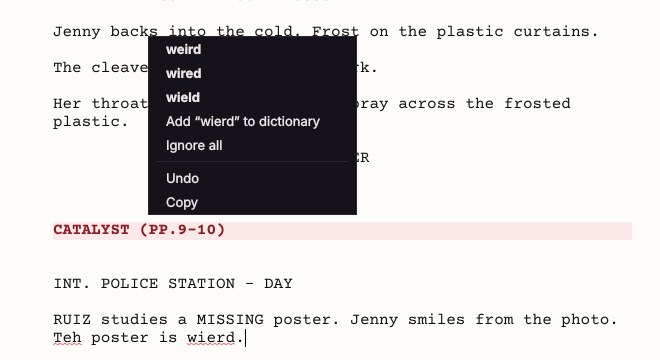
Red squiggle means a typo. Right-click it for suggestions, Add to dictionary, or Ignore all.
It uses Australian and British spelling, and it knows the jargon: squib, prosthetics, animatronic, hazer. It leaves your character names and ALL CAPS alone.
F7 turns it on or off.
12
Zen mode
For brains that wander off mid-scene
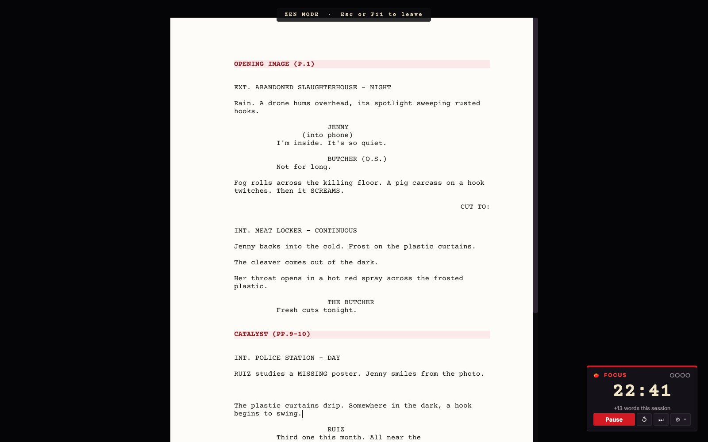
Press F11. Everything goes away except your page and the timer.
Go dark
F11 or View → Zen Mode goes full screen, black room, just the page.
Everything still works: Tab, Enter, spellcheck, Ctrl+S.
Esc or F11 brings the whole app back, exactly how you left it.
Timer without full screen? View → Focus Timer (Ctrl+Shift+T).
The tomato timer
Hit Start. Write for 25 minutes. Nothing else. No phone.
It beeps and flashes red. Take the 5-minute break, then come back.
Every 4th session (the ●●●● dots) you earn a long break.
+words this session counts what you've written since you sat down. It's proof the session counted.
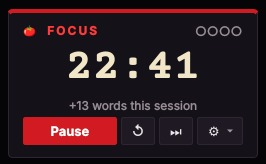
Red means write.
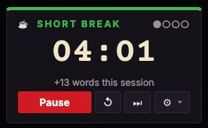
Green means step away.
Button
Does
↺
Restart this timer
⏭
Skip to the next phase
⚙
25/5, 50/10 or 15/3 minutes
13
When it breaks
It's a beta. It will.
Report a problem
Help → Report a Problem opens an email to Splatter VHS with your version, your system and the error log already filled in. Just add:
What you were doing.
What you expected to happen.
What actually happened.
If GORE DRAFT crashes, an error box gives you the same Report a Problem button. Save your work first if you can.
Help → Open Log Folder shows the raw log if anyone asks for it.
Lost this manual? Help → Read This Fucking Manual, or just press F1.
Known beta limits
PDF page breaks are close to industry standard, not exact (see chapter 10).
No revision colours or locked pages yet.
Celtx sketches and storyboards aren't imported.
No Mac version yet.
About AI
GORE DRAFT's code was built with Claude, an AI coding assistant. The app itself contains no AI. It never writes, suggests or analyses your work, it never goes online, and your scripts never leave your computer.
The best bug report is a screenshot plus one sentence. "I dragged scene 4 onto scene 2 and scene 3 vanished" gets fixed in a day. "It's broken" doesn't.
☠
Cheat sheet
Print this page. Tape it to the monitor.
Writing
Enter
Next line, logical next element
Tab
Next element type / change this line
Shift+Tab
Previous element type
Ctrl+1
Scene Heading
Ctrl+2
Action
Ctrl+3
Character
Ctrl+4
Parenthetical
Ctrl+5
Dialogue
Ctrl+6
Transition
Ctrl+7
Shot
Ctrl+8
Beat marker
INT. / EXT.
Auto Scene Heading
… TO:
Auto Transition
Moving around
Ctrl+] / [
Next / previous beat
Ctrl+Shift+↑↓
Move this scene
Click a scene
Jump to it
Drag a scene / card
Reorder
Files
Ctrl+N
New project
Ctrl+O
Open project
Ctrl+S
Save
Ctrl+Shift+S
Save as
Ctrl+Shift+N
Add script or novel
Ctrl+P
Export PDF
Breakdown
Select → right-click
Tag as an effect, prop…
Enter in Item/Notes
Add to scene
Click a cell
Edit it
Fill in Who
Makes makeup continuity work
Everything else
Ctrl+Z / Ctrl+Y
Undo / redo (moves too)
F11 / Esc
Zen mode on / off
Ctrl+Shift+T
Focus timer
F1
This manual
F7
Spellcheck on/off
Right-click a squiggle
Suggestions, add word
View → Minutes per Page
Tune the runtime estimate
Help → Report a Problem
Tell us what broke
Now go write something horrible.
GORE DRAFT is free, it's in beta, and it's made by one horror filmmaker in Brisbane who got tired of renting his own scripts back from the cloud. If it helped you get a scene on set, we want to see it.
Bugs & ideas: Help → Report a Problem, inside the app
GORE DRAFT is a Splatter VHS production. Script font: Courier Prime; heading font: Anton (both SIL Open Font License). Beat structure after Blake Snyder's Save the Cat; guide text is original. Celtx and Final Draft are trademarks of their respective owners. GORE DRAFT is independent and not affiliated with or endorsed by them.